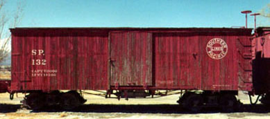
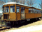

|
|
 |
Death Valley Railcar, Oblique Front View
Brill Model 55, built for the DVRR in 1928 as number 5. When the DVRR was abandoned Mar 15th, 1931, all equipment was transferred to U.S. Potash RR in Carlsbad, NM. This railcar was donated to the Laws Museum in 1965. Information from Randy Hees, Curator, Carter Car Museum | 41KB |
| ||
|
| Death Valley Railcar, Front Truck | 32 KB |
|